Tras haber visto el funcionamiento y los elementos del videojuego Pong en Scratch, hemos descubierto cómo podemos diseñar, encontrar errores de funcionamiento y crear tu propia versión del videojuego.
Ahora vamos a hacer algo similar con el videojuego del Laberinto (Maze), comenzaremos recordando sus características más destacables y finalmente aprenderemos cómo podemos modificarlo.
¡Adelante con él!
¿Cómo funciona el videojuego Laberinto (Maze)?
Recuerda que ya exploramos el funcionamiento del videojuego Laberinto o Maze en Scratch en la página 3. Explorando los videojuegos, ahora vamos a analizar su funcionamiento, las dinámicas del juego y una posible programación para cada una de ellas.
Vídeo de funcionamiento y programación
A continuación, visiona el siguiente video para que recuerdes el funcionamiento de este tipo de videojuegos de laberintos.
Funcionamiento de la mecánica fundamental
El videojuego consiste en mover un objeto o bola por un laberinto desde su entrada hasta la salida. El objetivo consiste en llegar a la salida marcada con un color. Si en algún momento tocamos un borde o pared del "Laberinto" la bola rebota y no puede avanzar.
A continuación, tienes una muestra del videojuego Laberinto. ¡Puedes probarla!
NOTA: La bola se mueve con las flechas del teclado.
Elementos
Una vez visto el funcionamiento del videojuego Laberinto (Maze), vamos a identificar los elementos que componen este videojuego.
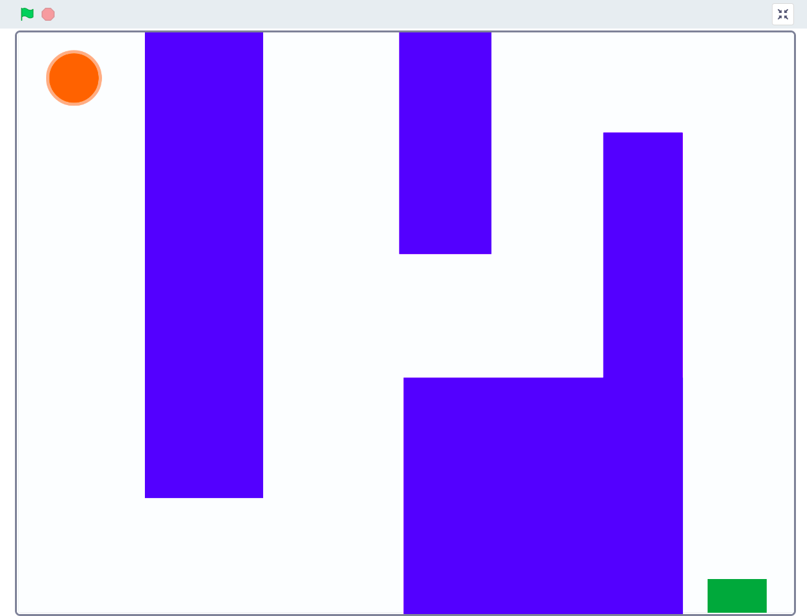
El juego está compuesto por los siguientes elementos:
- Laberinto, se diseña como un fondo del escenario.
- La bola, será el objeto principal que movemos hasta la salida del laberinto.
- La salida, estará marcada por un color diferente a los presentes en el laberinto, también se podrá crear como un objeto.
De forma esquemática tendríamos la siguiente descomposición del videojuego:
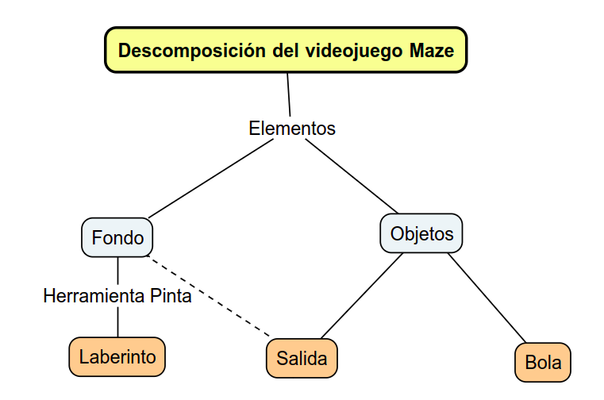
Vamos a ver una posible programación para estos elementos del videojuego Laberinto (Maze) en Scratch, atendiendo a cada una de las dinámicas de este juego.
Dinámicas
En la siguiente imagen puedes ver un posible esquema con la descomposición del videojuego en sus elementos y acciones.
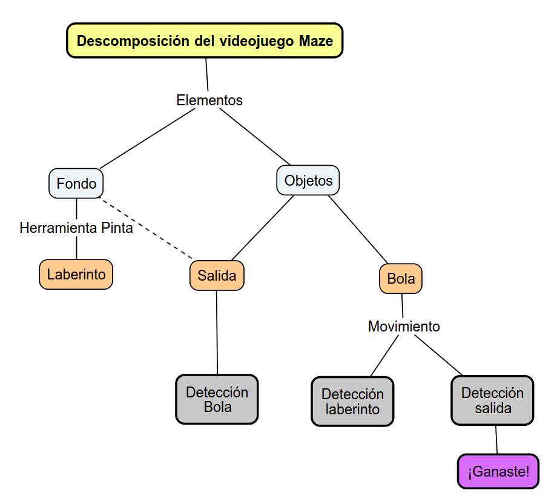
Movimiento de la bola
Podemos controlar el movimiento de la bola con las flechas direccionales del teclado.
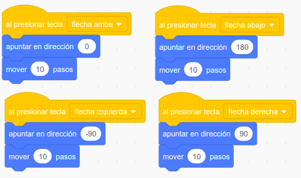
Detección paredes laberinto: separación de bola
Si la bola toca las paredes del laberinto debe salir:
En la misma dirección y velocidad con la que toca las paredes, pero en sentido contrario.
En el siguiente programa, la bola al tocar el color de las paredes del laberinto, se moverá a la misma velocidad pero en dirección contraria.
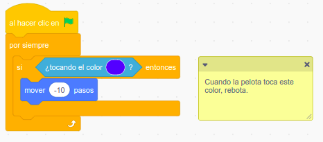
Detección salida: Ganar el juego
Cuando la bola llega a la salida o meta mostrará un mensaje. Para ello, tenemos varias opciones, lo más sencillo es programar que el objeto salida diga este mensaje o podemos diseñar un nuevo objeto con la herramienta pinta que diga Ganaste.
Dicho objeto al iniciar el videojuego estará escondido. Para que este objeto se muestre, debe esperar a que la bola alcance la salida. En ese momento mostraremos el objeto “Ganaste” y detendremos el juego.
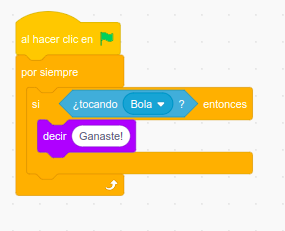
Vamos a comprobar lo que sabes sobre el videojuego Maze
Selecciona las respuestas correctas y pulsa sobre el botón "responder"
{kind=link}
{kind=link}
{kind=link}
{kind=link}
{kind=link}
Diseña un laberinto con mayor dificultad
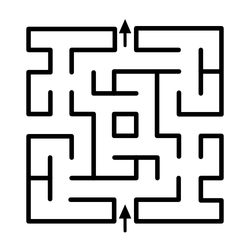
Con la herramienta pintar, prepara un laberinto con mayor dificultad.
Hasta ahora el laberinto que has visto sólo tiene un único camino para llegar a la salida y está pintado con bloques gruesos, pero si utilizas bloques más finos o líneas gruesas tal vez puedas dibujar distintos caminos alternativos. ¿Y si alguno de ellos no llevan a la salida? Entonces estaríamos ante un auténtico laberinto.
Diseña un laberinto más largo o con distintos recorridos con la herramienta pintar de Scratch.
Mejoras y cambios del videojuego Maze
Te propongo varias opciones, elige aquellas que consideres importantes para mejorar el juego.
Mensaje ¡Has ganado!
¿Cómo crees que será el videojuego si le añades un mensaje final cuando se consigue el objetivo?
Le aportarás una mejor estética.
Podrás ser original en su diseño, aunque puedes empezar por un simple mensaje ¡Has ganado!
Para crear el mensaje puedes emplear distintas opciones, desde un mensaje que sea dicho por un personaje, como un objeto o un fondo que sólo se muestre al final.
Para tu videojuego elige la opción que te guste más.
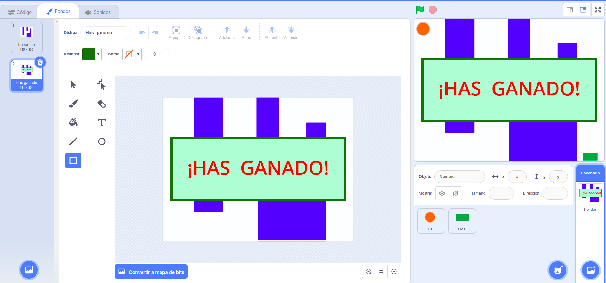
Mensaje ¡Has perdido!
Que el videojuego tenga un mensaje final cuando no se consigan los objetivos planteados.
Puedes utilizar tu imaginación para crear un mensaje original. Usualmente se usa el famoso "Game over".
Al igual que para el mensaje anterior tienes las mismas opciones para crearlo lo único que cambiará serán las condiciones para mostrarlo.
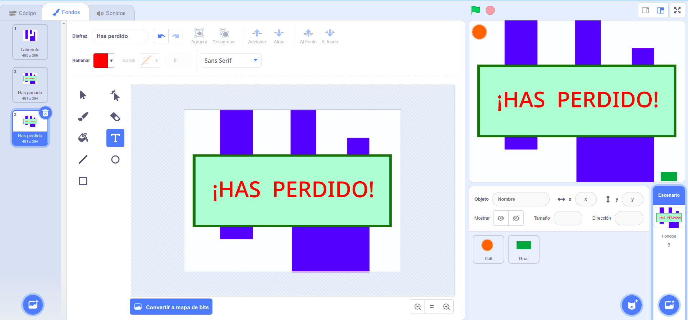
Aporta tu propia mejora
Piensa junto a tus compañeras y compañeros en posibles mejora para el videojuego. Toma nota de aquellas en tu cuaderno de aquellas que te resulten interesantes.
Para estas mejoras te propongo utilizar los siguientes bloques, coloca los bloques de la derecha en el lugar adecuado del conjunto de bloques de la izquierda y piensa a qué objeto corresponden.
1 Mensaje ¡Has ganado!
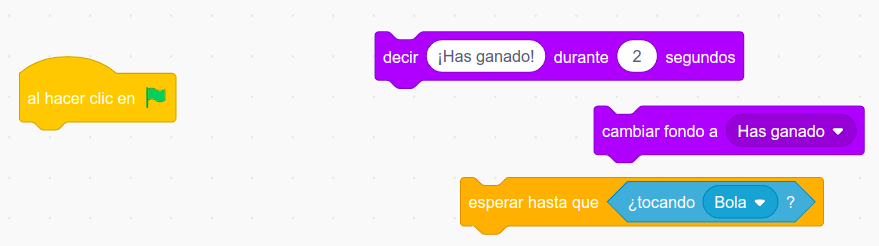
2 Mensaje ¡Has perdido!
Puedes modificar el videojuego para que el jugador pierda la partida si se tocan las paredes del laberinto. Así habrás aumentado la dificultad del juego.
Ordena los siguientes bloques de programación y averigua a qué objeto pertenecen.
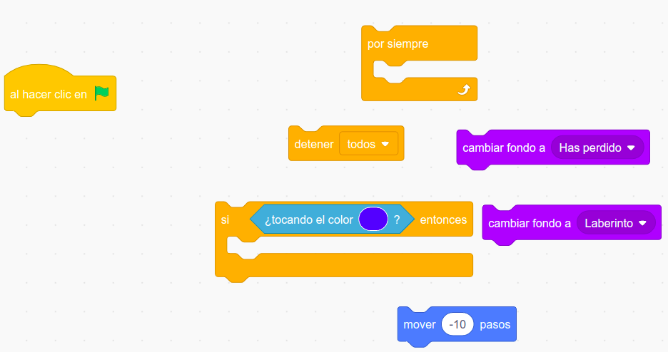
Lumen dice ¿Necesitas ayuda con las mejoras?
A continuación de doy algunas ideas que te pueden ayudar con tu programa.
1 Mensaje ¡Has ganado!
Ya sabes que hay múltiples formas de programar para conseguir un mismo fin. Al igual que existen muchos caminos diferentes para desplazarnos de un sitio a otro, aunque normalmente escogemos uno por algún motivo. En muchas ocasiones será porque es el más corto.
En programación funcionamos de forma similar, intentaremos usar el menor número de bloques posibles. No te preocupes que con la práctica verás como cada vez tus programas son más cortos.
Una posible combinación de bloques para un mensaje ¡Has ganado! como un fondo y que se dicho por un personaje. ¿Sabrías a que objeto u fondo se le puede asignar esta programación?
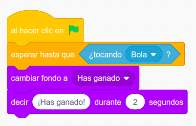
Otra forma de conseguir el mismo resultado con otros bloques:
- Crea un objeto con el mensaje "¡Has ganado!".
- Crea el objeto con la herramienta Pinta.
- Prográmalo para que inicialmente se encuentre oculto y sólo se muestre cuando reciba un mensaje que el jugador ha ganado.
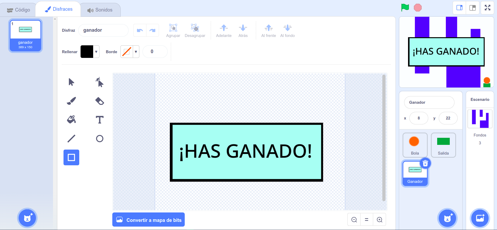
- Prográmalo para que inicialmente se encuentre oculto y sólo se muestre cuando reciba un mensaje que el jugador ha ganado.
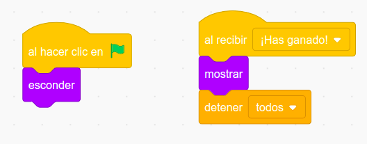
2 Mensaje ¡Has perdido!
Al igual que en el caso anterior, este mensaje se puede crear de cualquiera de las formas vistas. A continuación tienes un posible conjunto de bloques, aunque debes averiguar a si corresponden a un objeto o fondo.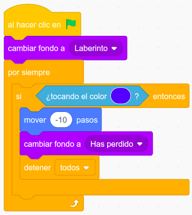
3 Otras ideas para tú mejora
Piensa en alguna otra modificación que mejore la jugabilidad del videojuego, por ejemplo, introduce nuevos obstáculos en el laberinto o enemigos que al tocar la bola se pierda la partida. ¡Seguro que a estas alturas se te ocurre alguna mejora más!Crea tu propio videojuego Laberinto (Maze)
Si quieres crear tu propio videojuego Maze con Scratch, sólo debes seguir el siguiente proceso: abre un proyecto nuevo en Scratch y crea todos los elementos del videojuego.
Para empezar a crear el videojuego, recuerda que los nuevos proyectos de Scratch comienzan con un fondo blanco y un gato. Pero puedes borrarlo y personalizarlo todo.
Además, necesitamos diseñar al menos dos objetos, una bola y una salida, además del laberinto, antes de pasar a programar el videojuego "Laberinto".
Abre el programa Scratch.mit.edu y ¡manos a la obra!.
1- Creación de los elementos
Los elementos del juego se pueden obtener de la galería o crear con la herramienta Pinta de Scratch. Una vez que los tenemos creados podemos empezar a programarlos.
En la siguiente imagen puedes apreciar todos los elementos en su conjunto.
Haz clic sobre la imagen para verla mejor.
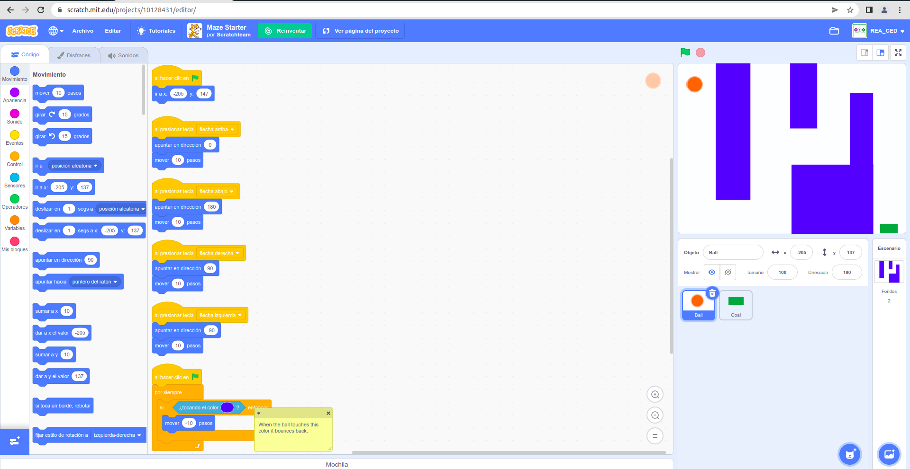
2- Crea el laberinto o fondo del juego
Para diseñar el laberinto lo haremos como un fondo para el Escenario que será la pantalla principal del videojuego.
Podremos buscar una laberinto ya creado o podemos recurrir a la herramienta Pinta de Scratch, para diseñar el laberinto, con un recorrido desde la entrada a la salida del mismo.
Puedes dibujar líneas gruesas o rectángulos como paredes hasta completar una trayectoria para la bola que lleve hasta la salida del laberinto.
Por último, ten presente que el color de las paredes del laberinto es importante, utiliza el mismo color para facilitar la programación.
Haz clic sobre la imagen para verla mejor.
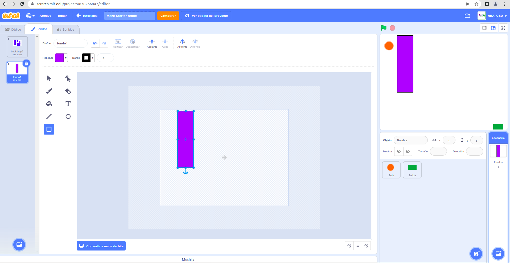
Un posible recorrido puede ser el siguiente.
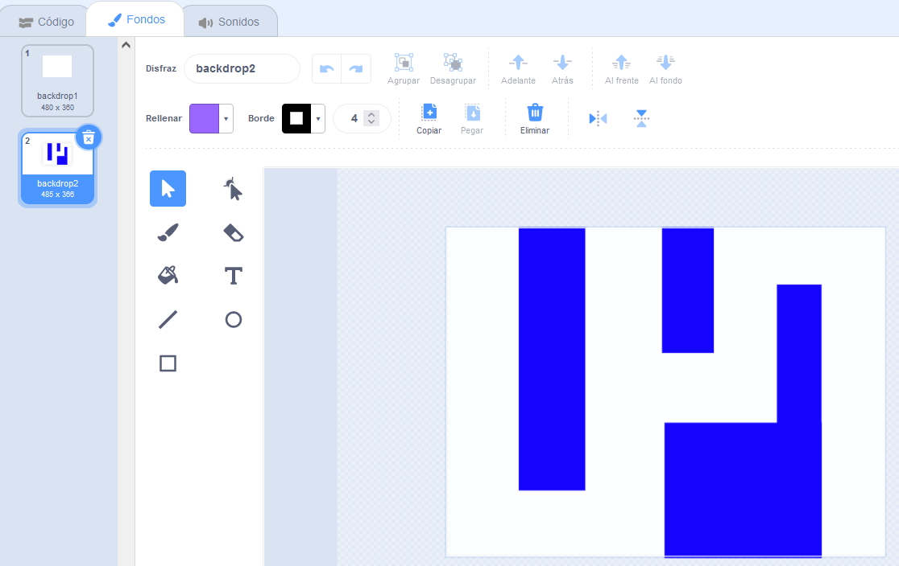
3- Crea y programa la salida o meta
Al final del laberinto tendremos la salida. El personaje principal debe alcanzar esta salida para conseguir vencer en este videojuego.
La salida la puedes crear como un objeto o como parte del fondo del juego. En el primer caso, el juego finaliza cuando la bola toque ese objeto y en el segundo caso cuando toque el color de la salida. En este segundo caso, es importante que el color de la salida sea diferente al del resto del laberinto.
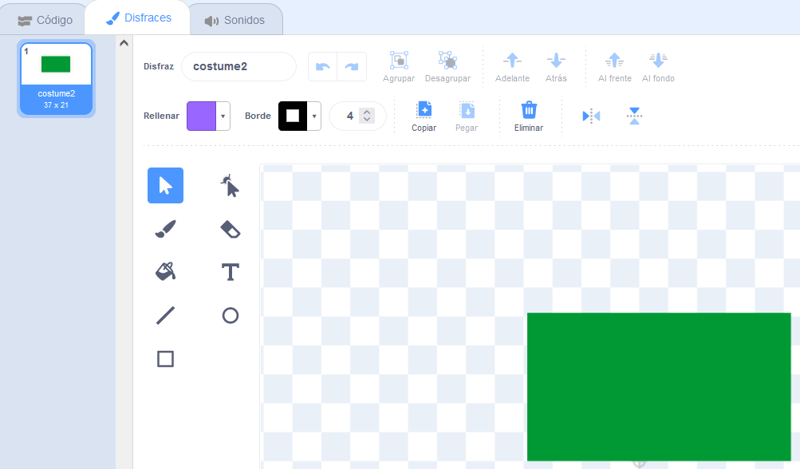
Podemos programar algo similar al siguiente conjunto de bloques para el objeto salida o meta que estará estático en la salida del laberinto.
Si la bola toca este objeto, el videojuego se detendrá, terminando la partida.
4- Crea y programa el objeto principal o bola
Podemos elegir como objeto principal un objeto de la Galería de Scratch o iremos a la herramienta Pinta, para diseñar el personaje. Lo más sencillo es que sea una bola.
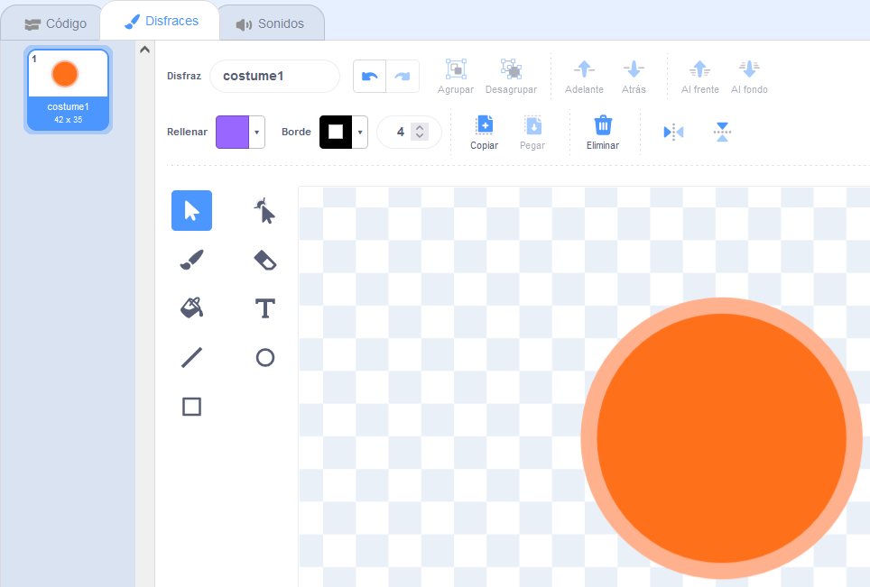
Añadimos al escenario el objeto que utilizaremos como bola y ajustaremos el tamaño deseado. Este objeto tiene tres acciones diferentes que realizar:
4.1- Posición inicial de la bola, que ocupará la posición (X=-205, Y=147), cada vez que comience el juego.
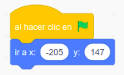
4.2- El contacto con las paredes del laberinto, provoca un movimiento en sentido contrario de la bola a una velocidad constante.
4.3- La bola se mueve con las flechas direccionales del teclado. En este caso optamos por realizar movimientos en cuatro direcciones -90, 0, 90, 180 grados.